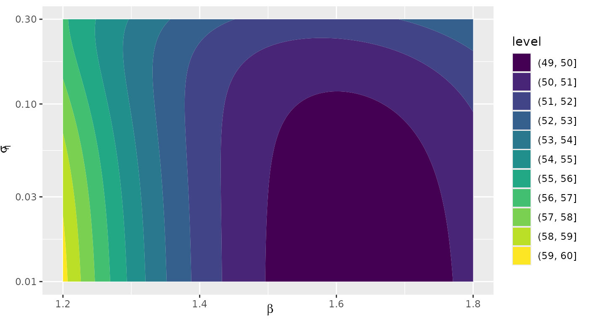

Introduction to demingx
Jan Gleixner
2025-12-23
Source:vignettes/demingx-intro.Rmd
demingx-intro.RmdOverview
The demingx package implements a heteroscedastic
slope-only errors-in-variables (EIV) model. It generalizes classical
Deming regression by accounting for known per-observation uncertainties
in both x and y, as well as estimating an intrinsic scatter term
.
Simulation example
We simulate and fit data with known heteroscedastic errors:
library(demingx)
set.seed(42)
d <- simulate_demingx(n = 50, beta = 1.5, sigma_eta = 0.2)
fit <- fit_demingx(d)Results
fit
# Extended Heteroscedastic Deming Fit
# beta = 1.6294
# sigma_eta^2 = 0.0001
# logLik = -49.17
# convergence code: 0Log-likelihood surface (optional)
ll <- function(beta, log_sigma2_eta) {
-demingx_loglik(c(beta, log_sigma2_eta), d)
}
beta_seq <- seq(1.2, 1.8, length.out = 100)
sigma_seq <- seq(log(0.01), log(0.3), length.out = 100)
grid <- expand.grid(beta = beta_seq, log_sigma2_eta = sigma_seq)
grid$loglik <- mapply(ll, grid$beta, grid$log_sigma2_eta)
library(ggplot2)
ggplot(grid, aes(beta, exp(log_sigma2_eta), z = loglik)) +
geom_contour_filled() +
scale_y_log10() +
labs(y = expression(sigma[eta]), x = expression(beta))